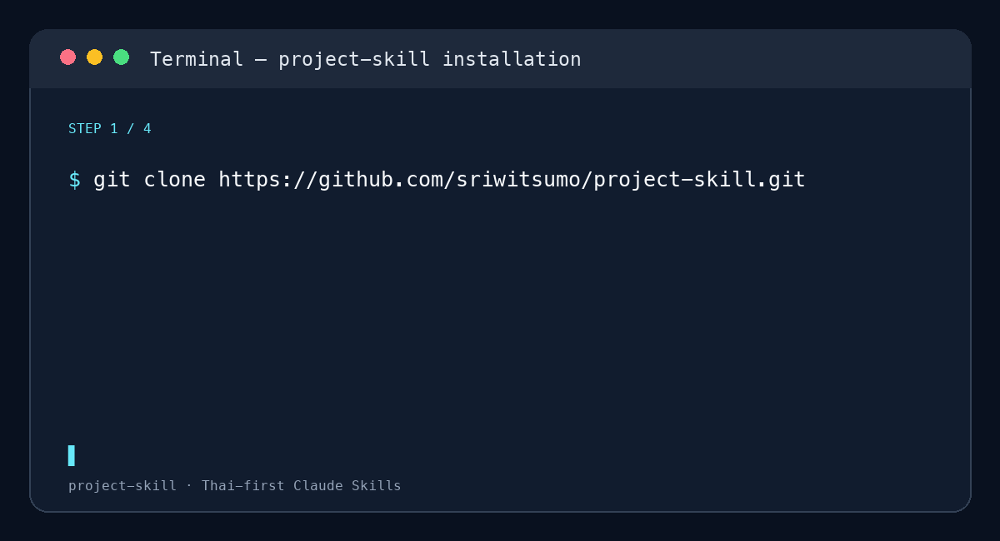

บทที่ 1–3
วางที่มา วัตถุประสงค์ กรอบแนวคิด และวิธีวิจัยอย่างเป็นลำดับ
CLAUDE SKILLS · ภาษาไทย
จากโจทย์ที่ยังไม่ชัด สู่โครงงานที่เป็นระบบด้วย Claude Skills สำหรับบทที่ 1–3 อ้างอิง APA และงานเอกสารภาษาไทย
ติดตั้งครั้งเดียว แล้วให้ Claude ช่วยงานโครงงานภาษาไทยได้ในทุก session

เลือกใช้เฉพาะสกิลที่ตรงกับงานของคุณ ไม่ต้องเริ่มจาก prompt เปล่าทุกครั้ง
วางที่มา วัตถุประสงค์ กรอบแนวคิด และวิธีวิจัยอย่างเป็นลำดับ
จัดรายการอ้างอิงภาษาไทยและตรวจความสอดคล้องกับเนื้อหา
ร่างหนังสือราชการ ปรับภาษา และจัด Word ให้ดูเป็นมืออาชีพ
ติดตั้งสกิลเขียนโครงงานใน Claude Code แล้วเริ่มด้วยภาษาไทยได้ทันที
$ git clone https://github.com/sriwitsumo/project-skill.git
$ mkdir -p ~/.claude/skills
$ cp -R project-skill/thai-project-chapter1 ~/.claude/skills/คือชุดคำสั่งและความรู้เฉพาะทางที่ช่วยให้ Claude ทำงานโครงงานวิจัยภาษาไทยได้อย่างเป็นระบบและสม่ำเสมอ
ได้ มีสกิลแยกสำหรับแต่ละบท รวมถึงสกิลเก็บข้อมูลโครงงานก่อนเริ่มเขียน
ไม่ได้ ควรตรวจความถูกต้อง แหล่งอ้างอิง และรูปแบบที่สถาบันกำหนดก่อนส่งทุกครั้ง